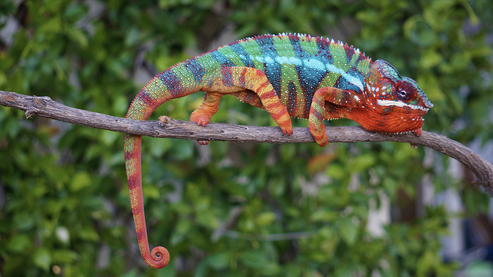

Chameleons or chamaeleons are a distinctive and highly specialized clade of Old World lizards with 202 species described as of June 2015. The members of this family are most known for their distinct range of colors as they are able to shift in different hues and brightness. Because of the large number of species in their family, there is a large variability in their ability to change color. For some, it is more of a shift of brightness (shades of brown) whereas others it is a plethora of combinations of colors (reds, yellows, greens, and blues)
